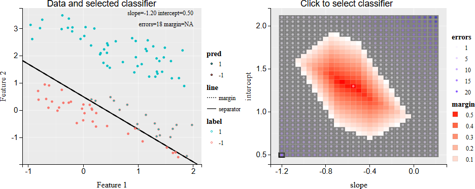
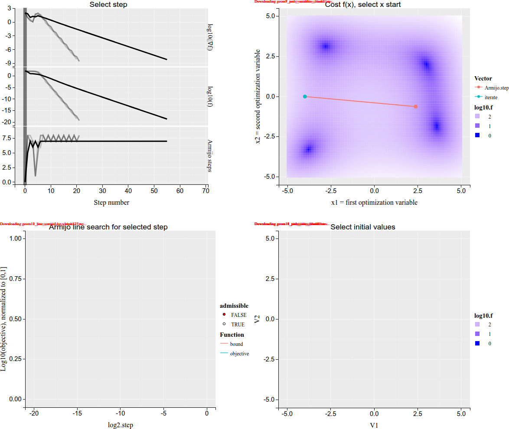
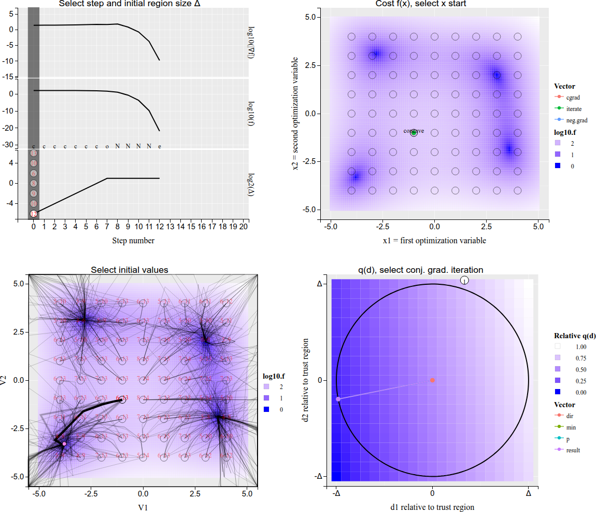
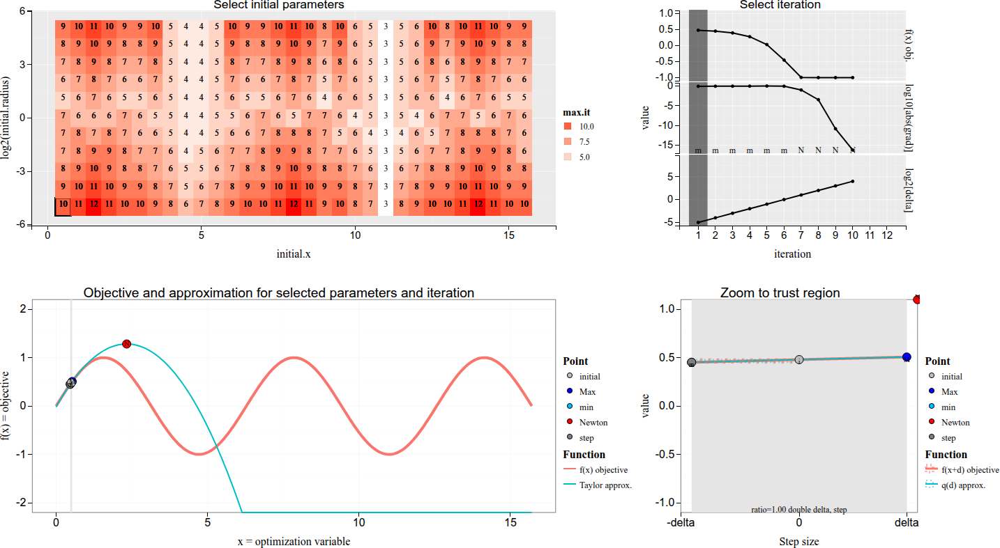
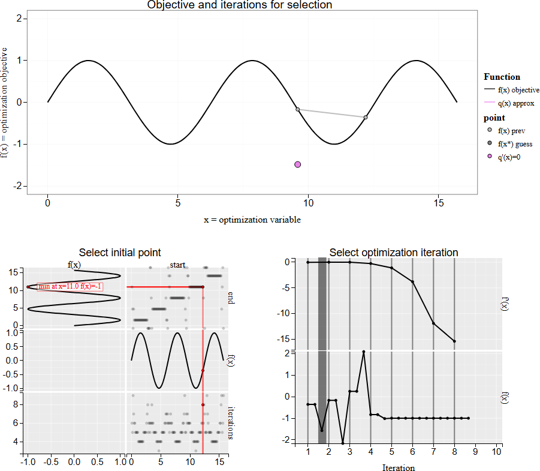
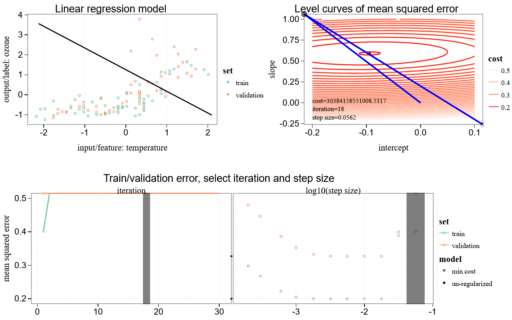
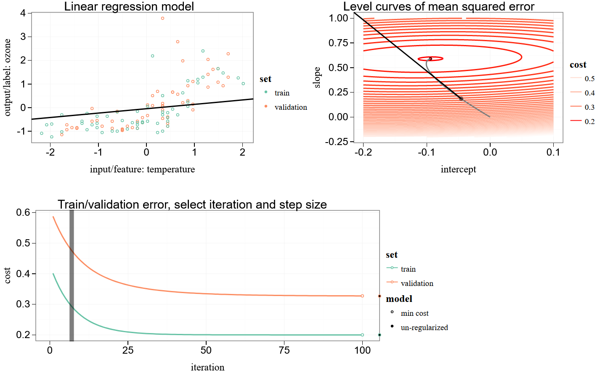

animint2 optimization gallery
This is a gallery of 8 data visualizations related to optimization, which have been created using the R package animint2.
| viz.link | title | links |
|---|---|---|
 |
Grid search for hard margin support vector machine | repo source NA |
 |
2D gradient descent with Armijo line search | repo source NA |
 |
2D Trust region and conjugate gradient | repo source NA |
 |
Trust region with Newton optimization algorithm in 1D | repo source NA |
 |
Newton’s method for stationary point finding | repo source NA |
 |
L2-regularized (Ridge) least squares linear regression | repo source NA |
 |
Gradient descent with several step sizes for 1d linear regression in ozone data | repo source NA |
 |
Gradient descent for 1d linear regression in ozone data | repo source NA |